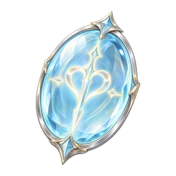
硝子の刻印
アリアの旅を支える装備。
e_glass ↗旅の記憶を宿す装備、戦場で手にする道具、技を磨く結晶。いろの共鳴に登場する54種類を、それぞれ一枚の絵にしました。

アリアの旅を支える装備。
e_glass ↗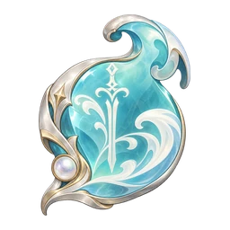
アリアの旅を支える装備。
e_tide ↗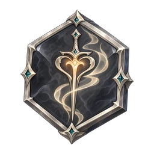
アリアの旅を支える装備。
e_ash ↗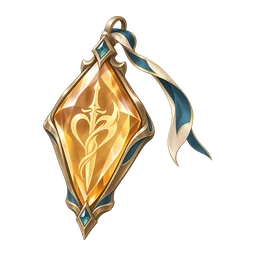
アリアの旅を支える装備。
e_amber ↗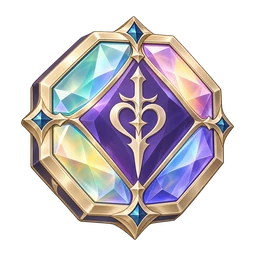
アリアの旅を支える装備。
e_prism ↗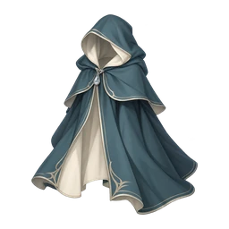
アリアの旅を支える装備。
a_rain ↗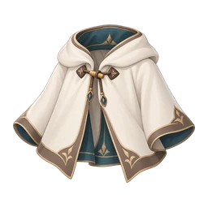
アリアの旅を支える装備。
a_wool ↗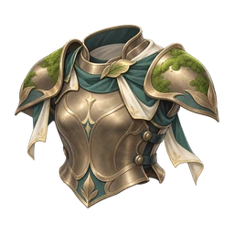
アリアの旅を支える装備。
a_moss ↗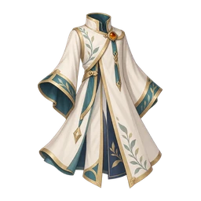
アリアの旅を支える装備。
a_gold ↗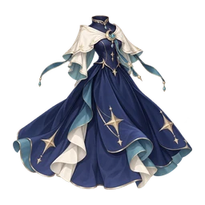
アリアの旅を支える装備。
a_star ↗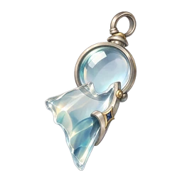
アリアの旅を支える装備。
c_lens ↗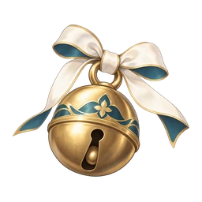
アリアの旅を支える装備。
c_bell ↗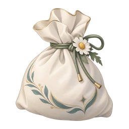
アリアの旅を支える装備。
c_tea ↗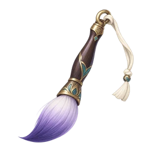
アリアの旅を支える装備。
c_brush ↗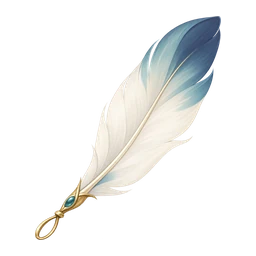
アリアの旅を支える装備。
c_feather ↗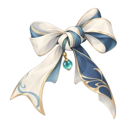
冷えた指でもほどけるように、少し長めに端を残した結び目。
u_knot ↗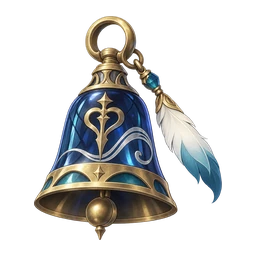
渡り鳥が鐘楼に残していった歌。背中から、そっと届く。
u_bell ↗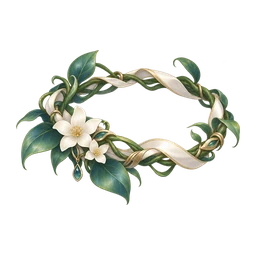
ひと冬かけて編んだドレスの、残った糸で編んだ冠。
u_vine ↗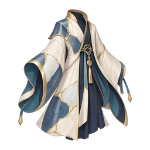
割れたところを、金でつないだ衣。傷のところがいちばん強い。
u_kintsugi ↗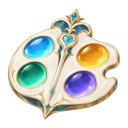
世界の色の調和を守ってきた、王の絵の具皿。
u_palette ↗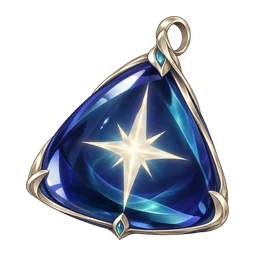
星が光るための黒。ルノワールの中で灯った夜空の一粒。
u_nightsky ↗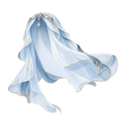
グランが灯台に預けた霧の、ひとすじ。
u_mist ↗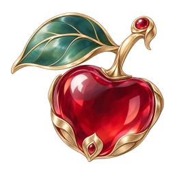
怒ったあとほど甘い、という赤い国の果実をかたどったもの。
u_fruit ↗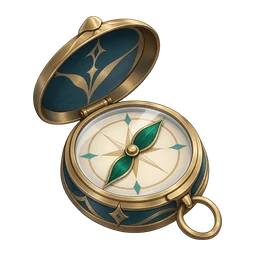
居心地がよすぎて出口を忘れた森で、マリーが落としたもの。
u_compass ↗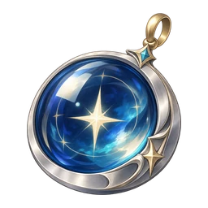
遠い星まで、すこしだけ近くに見える。
u_lens ↗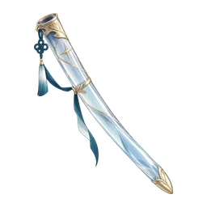
何も壊さない刃のための、何も隠さない鞘。
u_sheath ↗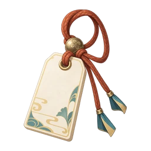
忘れものを、持ち主の手へ返すための紐。
u_quest_harbor ↗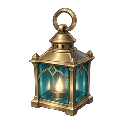
霧の向こうでも、帰る場所を知らせる灯り。
u_quest_lantern ↗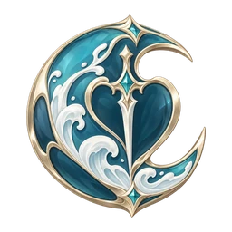
波が退く瞬間に合わせて刻んだ、深碧のしるし。
u_quest_tide ↗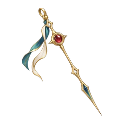
謝罪の言葉とともに、時を刻みはじめた針。
u_quest_clock ↗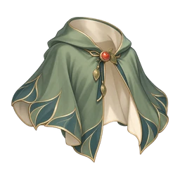
苦い果実の収穫を手伝った日に贈られたケープ。
u_quest_orchard ↗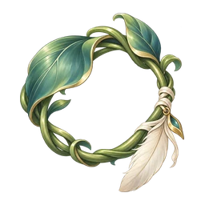
鳥たちが帰る道を、蔦の輪で結んだもの。
u_quest_thorns ↗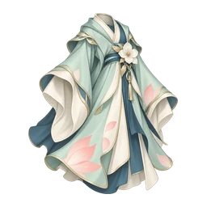
芽吹きを守った手に、やさしく寄り添う衣。
u_quest_bloom ↗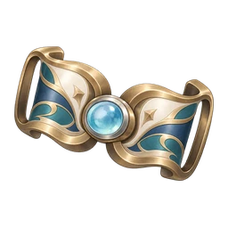
向こう岸へ渡る勇気を、胸元に留める金具。
u_quest_bridge ↗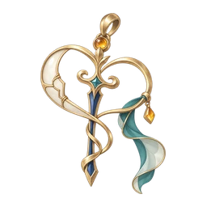
傷を隠さず、輝く道筋に変える金の線。
u_quest_gold ↗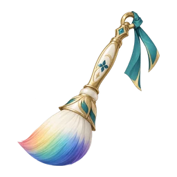
城下町に戻った七色を、旅の道へ描く絵筆。
u_quest_palette ↗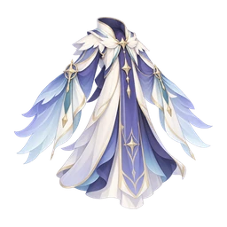
星と色の響き合いを織り込んだ、庭の羽衣。
u_quest_stargarden ↗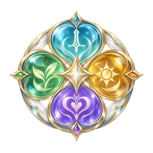
四つの絆を、ひとつの透明な剣へ刻んだもの。
u_quest_echo ↗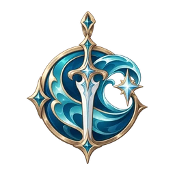
アリアの旅を支える装備。
u_legend_tide ↗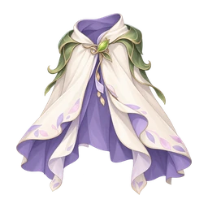
アリアの旅を支える装備。
u_legend_bloom ↗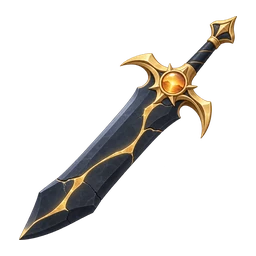
アリアの旅を支える装備。
u_legend_gold ↗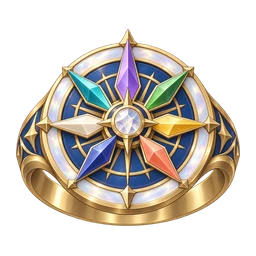
アリアの旅を支える装備。
u_legend_prism ↗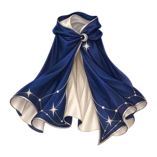
アリアの旅を支える装備。
u_legend_night ↗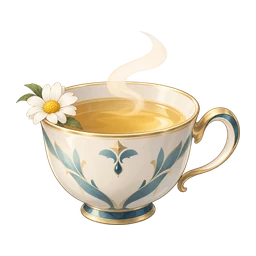
自分か隣の味方のHPを40%回復
i_tea ↗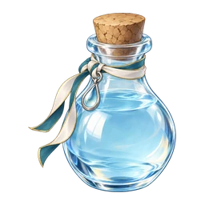
自分か隣の味方のHPを全回復
i_water ↗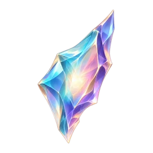
共鳴+4
i_shard ↗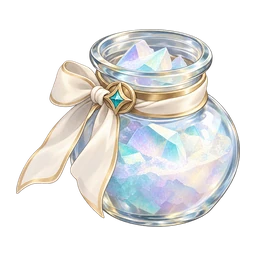
2マス先までの一点を中心に、周り2マスを虹に染める
i_powder ↗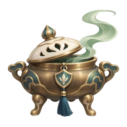
自分か隣の味方の守りを2ターン固める
i_ward ↗